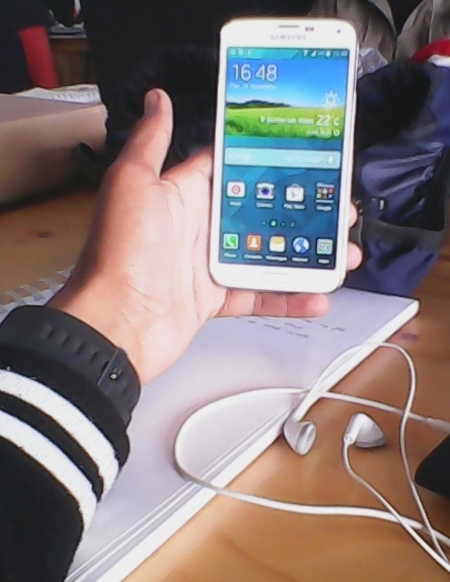
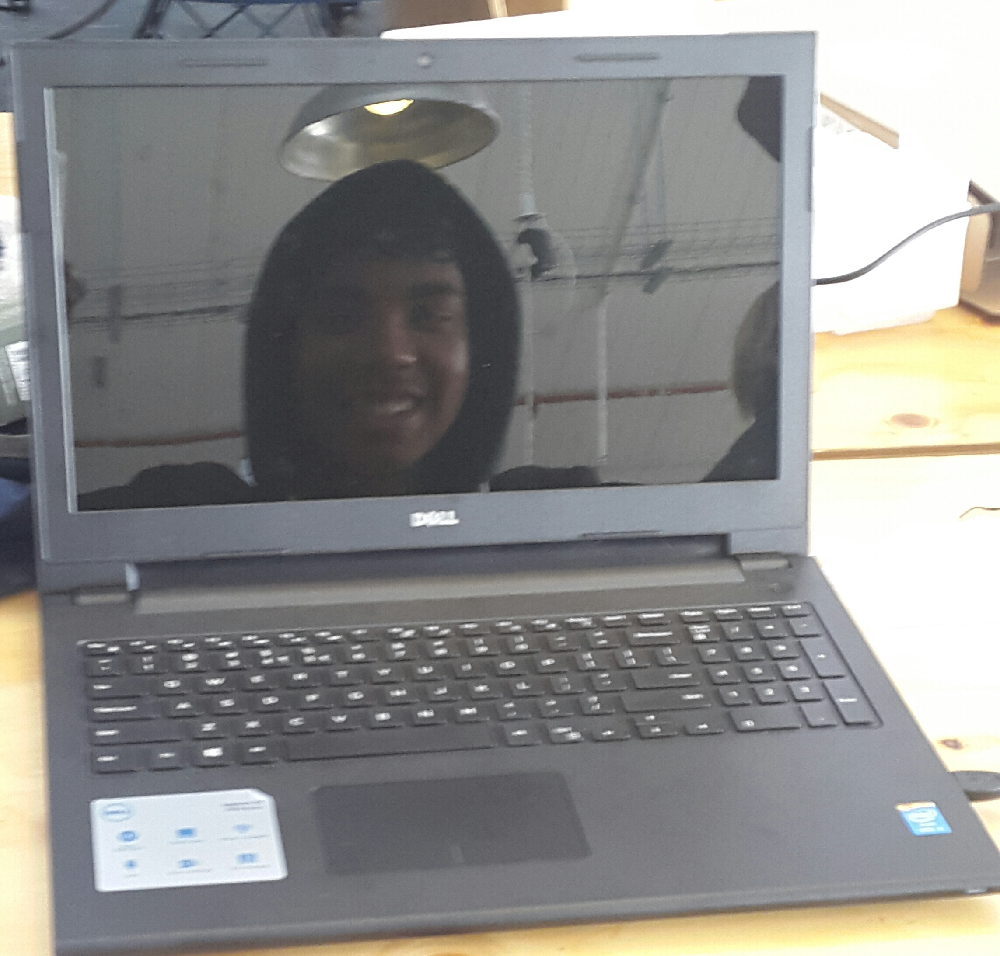

MY CODEX EQUIPMENT
 Working space in the IT industry is always packed with loads of tech equipment. These equipment range from the smallest micro computers like the Raspberry Pi, to the larger Android devices. They are, most of the time, easy to use and very user friendly. The device we use the most is a laptop. This is the tool we use to do our work at CodeX. If we were required to print our work then we would connect the printer to the laptop but that is not neccessary.
 At CodeX you experience something new everyday because you get to test out the latest Android devices. And, how cool is that if you are an Android fan. The computers use Ubuntu operating system which is more efficient then using Windows OS. The equipments that we use stays within the building, meaning that we cannot take them home. All of the stuff are of high standards and quality making them useful in proceeding with the daily tasks given.